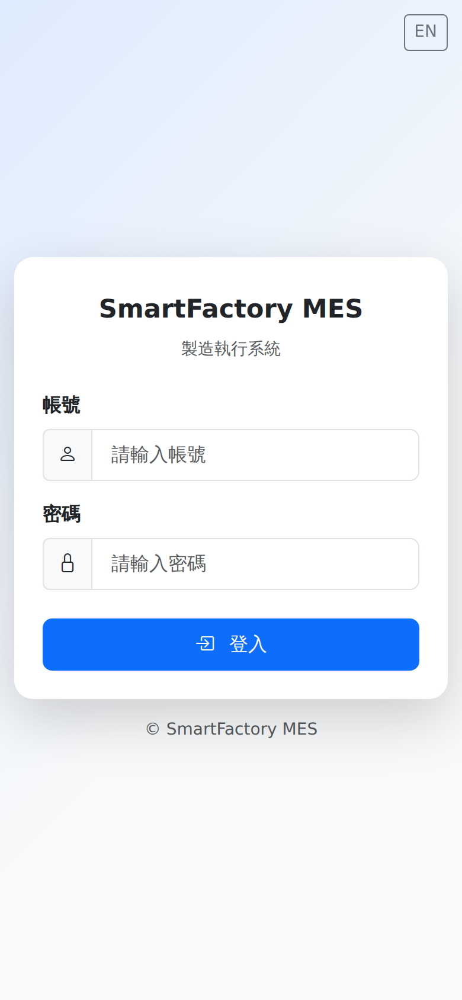
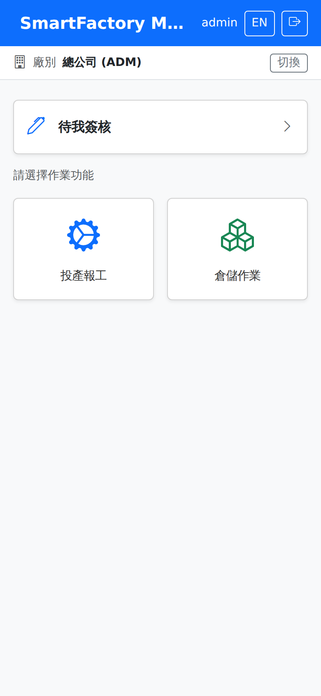
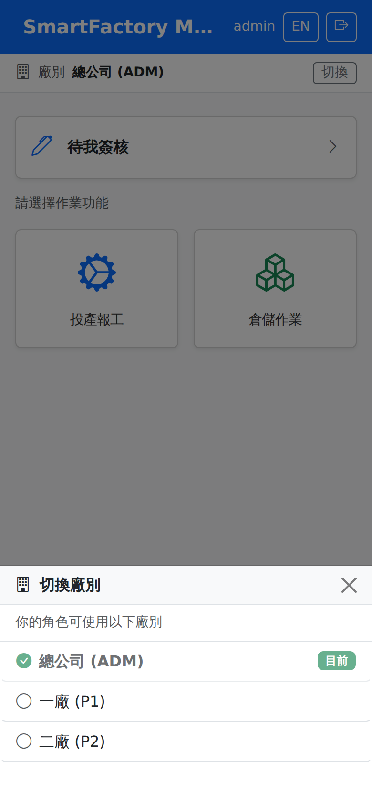
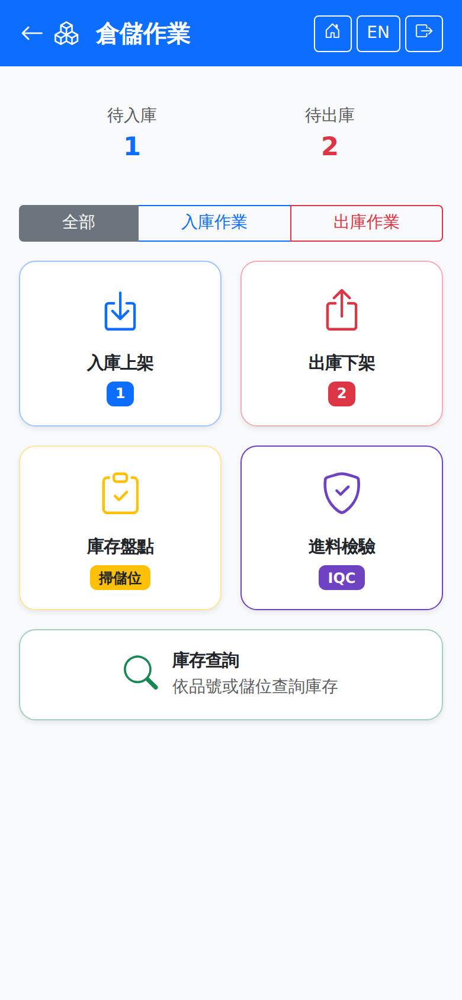

手機版操作說明（PWA）Mobile guide (PWA)
概覽Overview
SmartFactory MES 提供以 PWA（Progressive Web App）形式運作的手機版介面，供現場人員以手機瀏覽器掃碼執行報工、檢驗、庫存等作業，與桌機版共用同一套帳號、權限與資料庫。首次使用可於手機瀏覽器開啟系統網址（由系統管理者提供）後，選擇「加入主畫面」安裝成類 App 圖示，方便日後直接點選開啟。SmartFactory MES offers a mobile interface that runs as a PWA (progressive web app), so shop-floor staff can scan and carry out production reporting, inspection and inventory work in a phone browser, sharing the same accounts, permissions and database as the desktop version. The first time you use it, open the system URL (your administrator will give it to you) in your phone browser and choose "Add to Home Screen" to install it as an app-like icon you can tap in future.
作業流程圖（手機 ↔ 桌機分工）Process flow chart (what is done on mobile and what on the desktop)
依現場作業先後順序排列。Arranged in the order the work is done on the floor. 實線A solid line為手機可執行的步驟， marks a step that can be done on a phone, 虛線外框A dashed outline為須於桌機完成的作業，顏色區分模組。每個節點都可點擊，開啟該畫面的操作說明。 marks work that has to be done on the desktop, and the colours indicate the module. Every node can be clicked to open the instructions for that screen.
登入（含兩階段驗證）Logging in (with two-factor authentication)
登入步驟Logging in

登出Logout
點擊右上角的Tap 「登出」即可登出。"Log out" at the top right.
各畫面頁首的按鈕都在圖示下方標有文字（返回、首頁、登出等）；查詢列旁的按鈕也在圖示旁標有「掃描」「搜尋」「重新整理」「清除」等文字（2026-10-19 起）。Every header button carries a label under its icon (Back, Home, Log out and so on), and the buttons beside search fields are labelled "Scan", "Search", "Refresh", "Clear" and the like (from 2026-10-19).
功能模組Modules
登入後首頁以格狀選單顯示帳號有權限的功能模組，常見包含：After logging in, the home page shows the modules the account has access to as a grid; the usual ones are:

生產現場（MFG）Shop floor (MFG)
庫存作業（INV）Inventory operations (INV)
待我簽核My Approvals
實際顯示的模組依帳號角色權限而定；無任何手機模組權限時，首頁會顯示「尚未設定手機模組權限」提示，請洽系統管理員。Which modules actually appear depends on the account's role permissions; with no mobile module permission at all, the home page shows "no mobile module permissions have been set" — ask your system administrator.
投產報工的作業功能捷徑Shortcuts for production and reporting tasks
進入「投產報工」後，畫面上方的「作業功能」區以圖示加文字的按鈕列出可直接前往的作業：Inside "Production and reporting", the "Tasks" area at the top of the screen lists the tasks you can go straight to as icon-and-text buttons: 生產排程Production Schedule、首件檢查First-piece inspection、製程檢驗In-process inspection、機台狀態Machine Status；「生產排程」頁內另有; the "Production schedule" page also has 排程查詢Schedule Query與 and 生產準備看板Preparation Board兩個按鈕。 two buttons.
捷徑依角色的手機作業權限顯示：未授權「檢驗（FPI/IPQC）」「機台狀態異動」「生產排程查看」的角色不會看到對應按鈕，全部未授權時整區隱藏。權限於The shortcuts follow the role's mobile permissions: a role without "inspection (FPI/IPQC)", "machine status change" or "view production schedule" does not see the matching button, and the whole area is hidden when none is granted. Permissions are set under 手機權限維護Mobile permission maintenance畫面設定。 screen.
「開工／下工」與「報工」不在捷徑列——這兩項須針對特定派工執行，請由下方派工清單點選要作業的派工卡進入。"Start / end work" and "Report" are not on the shortcut bar — they have to be done against a particular dispatch, so tap the dispatch card you want in the list below.
備料準備Staging
點派工卡進入後，「備料準備」區列出本派工Tap a dispatch card and the "Staging" area lists this dispatch's 尚未備妥的用料Material not yet ready與已開立的備料單狀態，可直接點「建立備料單」開出草稿單（備料倉取自工作中心的預設設定）。 確認鎖料與實際揀料移倉請由桌機的 and the status of any staging order already raised; tapping "Create staging order" raises a draft (the staging warehouse comes from the work center default). Confirming the stock lock and actually picking and moving it are done on the desktop under 備料單Material Staging畫面完成。 screen.
模具不需在此回報tooling does not have to be reported here——沿用排程時已指定的模具，打次統計與模具衝突偵測不受影響。機台準備（換模、換線）的工時另按「開始備料／備料完成」計時，工序未設準備工時者會顯示「免機台準備」，可直接開工。 — the tooling assigned during scheduling is used, and shot counting and tooling conflict detection are unaffected. Machine setup (tooling or line changeover) is timed separately with "Start setup" and "Setup done"; operations with no setup time defined show "no machine setup" and can start straight away.
報工與完工的差別The difference between reporting and finishing
生產中可During production you can 多次報工multiple production reports（例如每完成一批轉移就回報一次），報工後 (for example once per transfer batch); after reporting, 人仍在線上繼續生產people stay online and keep producing； 本次作業結束時改按「; at the end of the session tap " 完工並報工Finish and report」，可一併回報最後一批數量（不填即為純下工），系統關閉本次上工並結算工時。 尚未生產完可再次開工，形成下一輪循環；累計良品數達派工量時派工自動結案。 ", where you can report the final quantity at the same time (leave it blank to just clock out); the system closes the session and settles the hours. If production is not finished you can start again for another round; the dispatch closes automatically when the cumulative good quantity reaches the dispatched quantity.
切換廠別與推播通知Switching plant and push notifications
切換廠別Switching plant
首頁上方顯示目前廠別，右側的「切換」可改成其他廠。清單內容依角色而定：角色有指派廠別時只列出可用的那幾個並標示「你的角色可使用以下廠別」；只被指派一個廠時顯示「你的角色只被指派這一個廠別」；未限制廠別的角色則可使用系統所有廠別。The home page shows your current plant at the top, and "Switch" on the right changes it. What is listed depends on your role: a role with assigned plants sees only those, marked "Your role can use these plants"; a role with just one shows "Your role is assigned to this plant only"; a role with no restriction can use every plant in the system.

切換成功後整頁會自動重新載入，這是正常的：畫面上的派工與機台清單是切換前讀的，重新載入才會換成新廠別的資料。重新載入需要網路，所以切換廠別本來就得在連線狀態下進行。After a successful switch the page reloads itself, which is expected: the dispatch and machine lists on screen were read before the switch, and reloading replaces them with the new plant's data. The reload needs a connection, so switching plant is an online-only action anyway.
電腦與手機共用同一個作用廠別。在手機切換廠別後，電腦上切換前就開著的畫面若直接存檔，系統會擋下並提示「這個畫面是在某廠開啟的，但你目前的作用廠別已經變成另一廠」，這次不會存檔，以免單據存到錯的廠。填寫中的內容會留在畫面上，並詢問「要現在把廠別切回原本的廠，並照目前填寫的內容存檔嗎？」——選「確定」會切回畫面開啟時的廠別並直接存檔；選「取消」則不存檔，若要改建在新的廠別，請重新整理後重新填寫（重新整理會清掉面板內容）。系統更新後第一次送出舊頁面時，也可能看到「這個畫面缺少開啟時的廠別資訊」，同樣重新整理即可。Your computer and phone share one active plant. If you switch plant on the phone, saving a screen that was already open on the computer before the switch is blocked with a message saying the screen was opened under one plant but your active plant is now another — nothing is saved, so the document cannot land in the wrong plant. What you typed stays on screen, and you are asked whether to switch back to the original plant and save what you filled in — OK switches back to the plant the screen was opened under and saves; Cancel leaves it unsaved. To create it in the new plant instead, refresh and fill it in again (refreshing clears the panel). Right after a system update, submitting a page opened before the update may likewise say the screen is missing its plant; refreshing fixes it.
另一台裝置切換了廠別：手機首頁從背景切回來、或從其他頁面返回首頁時，會自動重新讀取目前的廠別與角色，不必手動重新整理。Switched plant on another device: when you bring the home page back from the background, or return to it from another page, it re-reads your current plant and role automatically — no manual refresh needed.
切換角色Switching role
廠別列下方是目前角色，按右側「切換」會列出你帳號所屬的所有角色，點選即可切換，規則與電腦上的切換角色相同。若新角色不包含目前的廠別，會自動改到該角色的預設廠別。切換後整頁會重新載入；與切換廠別一樣，手機上還有暫存待送出的資料時不能切換。Below the plant row is your current role. "Switch" lists every role on your account; tap one to switch — the same rules as switching role on the computer. If the new role does not include your current plant, you are moved to that role's default plant. The page reloads afterwards, and as with switching plant, you cannot switch while entries are still waiting to be sent.
若角色顯示「已失效，請重新選擇」，代表管理員已把你目前使用的角色移除，請在這裡選一個剩下的角色。If the role shows "No longer available — choose again", an administrator removed the role you were using; choose one of the remaining roles here.
簽核清單同樣只列目前廠別的單據。若在手機上找不到某張待簽的單，先確認廠別是否正確。The approval list is also limited to the current plant. If a document you expect is missing on the phone, check which plant you are in first.
推播通知Push notifications
首頁右上角的「推播通知」（鈴鐺）可訂閱／取消推播。首次訂閱時瀏覽器會要求通知權限，未允許則無法訂閱（畫面會提示「請允許通知權限才能訂閱推播」）。訂閱後鈴鐺變為實心，並多出一顆黃色鈴鐺的「測試推播」，按下後手機應立即收到一則測試通知，用來確認推播通道正常；平常不需要使用。"Push notifications" (the bell) at the top right of the home page subscribes to or cancels push. The browser asks for notification permission the first time, and without it you cannot subscribe (the screen says "Allow notifications before subscribing to push"). Once subscribed the bell fills in and a yellow-bell "Test push" button appears; pressing it should deliver a test notification to the phone straight away, confirming the push channel works. You do not need it day to day.
為了安全，系統只接受各大瀏覽器的正式推播服務（Google、Mozilla、Apple、Microsoft）；每個帳號最多可訂閱 10 台裝置（管理者可調整），超過時畫面會提示「已達裝置推播訂閱數量上限」，請先在不再使用的裝置上取消訂閱。For security the system accepts only the browsers' official push services (Google, Mozilla, Apple, Microsoft). Each account can subscribe up to 10 devices (adjustable by an administrator); beyond that the screen says "The device subscription limit has been reached" — cancel the subscription on a device you no longer use first.
有單據輪到你簽核時會收到推播，點通知會直接開到手機的「待我簽核」清單，不會把你帶到電腦版畫面。You get a push when a document reaches you for approval, and tapping it opens the mobile "My Approvals" list rather than taking you to a desktop screen.
推播需要瀏覽器支援並且 Service Worker 已就緒；不支援的瀏覽器會直接提示，不會靜靜失敗。Push needs browser support and a ready service worker; an unsupported browser is told so rather than failing silently.
各畫面說明Screen instructions
以下每個手機畫面各有一頁說明，含畫面截圖、操作步驟與注意事項。畫面是否顯示依角色的手機權限而定。Each mobile screen below has its own page with a screenshot, the steps and the things to watch for. Whether a screen appears at all depends on the role's mobile permissions.
生產現場（MFG）Shop floor (MFG)
倉儲作業（INV）Warehouse (INV)
倉儲作業首頁以「待入庫／待出庫」兩個數字開場，下方卡片即以下各畫面的入口。The warehouse operations home page opens with the pending inbound and outbound counts, and the cards below it lead to the screens that follow.

斷線保護Disconnection protection
手機版需要連線才能使用，不是離線作業。派工、庫存、待檢單等畫面資料一律即時向伺服器讀取；連不上時畫面會顯示「需要連線」，不會拿舊資料頂替——舊資料可能早已不同（派工被調整、別人已補登），看了反而誤事。The mobile app needs a connection; it is not an offline app. Dispatches, stock, inspection orders and other screen data are always read live from the server. When the server cannot be reached the screen says "Connection required" instead of showing old data, which may already be wrong (a dispatch rescheduled, someone else having entered it).
斷線保護只處理一種狀況：按下送出的那一刻剛好斷線（廠區 Wi-Fi 短暫中斷、伺服器重新啟動中）。這時下列作業會先暫存在手機上，恢復連線後自動送出，每分鐘也會自動再試一次；每筆都帶唯一識別碼，重送不會重複計數：Disconnection protection covers one situation only: the connection drops at the moment you tap submit (a brief Wi-Fi outage on the floor, the server restarting). The following entries are then saved on the phone and sent automatically when the connection returns, with another automatic attempt every minute; each carries a unique identifier, so resending never double counts:
- 報工、完工並報工、下工、機台狀態異動（最優先送出）Production reports, finish-and-report, clocking out, machine status changes (sent first)
- 入庫上架、出庫下架、盤點（初盤／複盤）Put-away, picking, stock counts (first count / recount)
- 工單發退料過帳、備料移入、領料／退料申請Work-order issue/return posting, staging, requisition / return requests
訊號很弱時也一樣：按下送出後 20 秒都沒有回應，畫面不會一直轉圈，會改成「已暫存，連線後自動送出」。伺服器若其實已經收到並處理好了，之後的重送也只會拿回同一份結果，不會多算一筆——所以看到「已暫存」時不要再按一次。The same applies when the signal is very weak: if there is no response within 20 seconds of tapping submit, the screen stops spinning and shows "saved, will be sent when connected". If the server had in fact already received and processed it, the resend just gets the same result back and nothing is counted twice — so when you see "saved", do not tap submit again.
同一條線很多人同時報工時（例如換班），系統會自動重試，很少再出現「資料已被其他人修改」。若仍出現，表示這一筆沒有存進去，再按一次送出即可，不會重複計數。When many people on the same line report at once (at a shift change, for example), the system retries automatically, so "the data was changed by someone else" now rarely appears. If it still does, that entry was not saved — just tap submit again; it will not be counted twice.
記錄的是按下送出的時間，不是送達的時間。例如 10:00 按下工、10:20 才恢復連線，下工時間仍記 10:00，工時與停機時間不會被拉長。The time recorded is when you tapped submit, not when it arrived. For example, if you clock out at 10:00 and the connection only comes back at 10:20, the clock-out is still recorded at 10:00, so hours and downtime are not stretched.
只能在連線時做的作業（不會暫存）：簽核、上工、首件檢驗、製程檢驗、進料檢驗、委外收料。Actions that work only while connected (never saved for later): approvals, clocking in, first-piece inspection, in-process inspection, incoming inspection, outsource receiving.
待送出清單的按鈕：「立即同步」馬上送出；送出失敗的項目可「重試失敗項」或逐筆「重試」；「清除已送出」清掉已成功的紀錄。Buttons in the waiting list: "Sync now" sends immediately; failed items can be retried with "Retry failed items" or one by one with "Retry"; "Clear sent" removes the ones that went through.
- 不會替別人送出：暫存的每一筆都記著是誰按的送出。換別人登入時，那幾筆會標示「請由原操作者登入後再同步」，等原操作者登入才送出。Never sent on someone else's behalf: each held item remembers who pressed Submit. If someone else signs in, those items are marked "sign in as the original user to sync it" and wait until that person signs in.
- 登出前確認：還有未送出的暫存時按登出，會先詢問；確定登出後資料仍留在這台手機，下次原操作者登入時送出。Sign-out check: signing out while held items are still unsent asks for confirmation first; the items stay on this phone and are sent the next time the original user signs in.
常見問題FAQ
- Q：輸入帳密後又跳回帳密輸入畫面，沒有任何錯誤訊息？Q: After I enter my username and password it just goes back to the login screen, with no error message. Why?
- A：請確認帳號是否已啟用兩階段驗證——啟用後登入需先完成驗證碼步驟才算完成，並非登入失敗。若輸入畫面持續跳回且有看到錯誤提示，才代表帳號或密碼錯誤。A: Check whether two-factor authentication is enabled on the account — once it is, logging in is not complete until the verification step is done, and this is not a failure. Only if the screen keeps returning and shows an error message is the username or password actually wrong.
- Q：換了新手機，Authenticator App 裡的驗證碼跟原本不同，無法登入？Q: I have a new phone and the code in my authenticator app is different, so I cannot log in. What now?
- A：代表原本綁定的驗證器已遺失，請洽系統管理員協助重置該帳號的兩階段驗證，重置後需重新掃描 QR Code 綁定。A: This means the authenticator you registered has been lost. Ask your system administrator to reset two-factor authentication for the account; you will then have to scan the QR code again to register.
- Q：手機版首頁顯示「尚未設定手機模組權限」？Q: The mobile home page says "no mobile module permissions have been set". Why?
- A：帳號權限未開放任何手機作業模組，請洽系統管理員於角色權限中開通。A: The account has not been given access to any mobile module. Ask your system administrator to enable it in the role permissions.
- Q：待送出清單的項目一直顯示失敗？Q: Items in the waiting list keep showing as failed. What should I do?
- A：先看紅字原因。若是伺服器拒收（例如派工已結案、數量超過派工量），重試也不會過，請在桌機確認後補登，再按「捨棄」；若只是當時連不上，確認網路恢復後點「重試失敗項」。仍無法判斷請截圖錯誤訊息回報系統管理員。A: Read the red message first. If the server rejected it (for example the dispatch is already closed, or the quantity exceeds the dispatch), retrying will not help — check on the desktop, enter it there, then tap "Discard". If it simply could not connect at the time, make sure the connection is back and tap "Retry failed items". If you cannot tell, take a screenshot of the error message and send it to your system administrator.